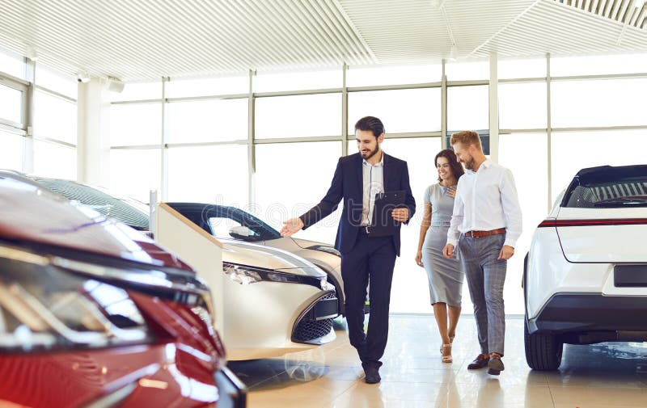

 Kompania Riadi është themeluar në vitin 2000 nga Riad Bozhlani nga Vushtrria.
Gjatë dy viteve punë intensive, në dhjetor të vitit 2011, u hap salloni,
qendra e shitjes së veturave në Prishtinë.
Puna jonë krijon besim dhe besueshmëri me klientët tanë dhe qëllimi ynë është t’u
ofrojmë klientëve tanë makinën më të mirë me çmimin më të përballueshëm.
Si filluam
Kompania Auto Sallon Riadi është themeluar në vitin 2000 nga vëllezërit Bozhlani
nga Vushtrria, në fillim kompania merrej me shitblerje të veturave,
në atë kohë veturat më të shitura ishin veturat e prodhimit gjerman.
Rrugëtimi ynë
Pas një analize të fizibilitetit nga ana ekspertëve, menaxhmenti i kompanisë vendosi
që në vitin 2009 të transferohet me seli në Prishtinë, Gjatë dy viteve të punimeve
intensive, ne dhjetor të vitit 2011, hapet salloni, qendra për shitjen e automjeteve në
Prishtinë. Një objekt impozant dhe ultramodern me të gjitha e kësaj veprimtarie, ku
ofrohen edhe shërbimet e servisimit nga ana e stafit të palodhshëm dhe profesional,
me aparaturë bashkëkohore si dhe me Auto pjesë origjinale nga prodhuesit evropian
dhe botëror. Gjithashtu, në dispozicion është edhe restaurant-bar në shërbim të
klientëve. Sot, kompania bën shitjen e prodhimeve të të gjithë prodhuesve kryesorë
evropiane dhe botëror të veturave.
Misioni dhe Vizioni
Puna jonë ndërton urën dhe besueshmërinë ndaj klientëve tanë, dhe qëllimi ynë
është t’i ofrojmë klientit tanë makinën më të mirë me çmimin më të volitshëm. Ne
jemi një kompani lidere e shitjes së automjeteve në Kosovë.
Pse duhet të na zgjidhëni ne
Sepse, 99% të klientëve tanë kthehen përsëri tek ne, për të blerë veturë pas blerjes
së parë. Pra, ne jemi këtu për t’ju bërë të zgjidhni më të mirën, me çmime të
volitshme. Ne u mundësojmë klientëve të zgjedhin automjetin e tyre të ardhshëm
përmes faqes sonë të internetit, ose përmes rrjeteve sociale, ose të na vizitojnë në
qendrën tonë. Ju jeni ata që do të ktheheni tek ne gjithmonë të kënaqur.